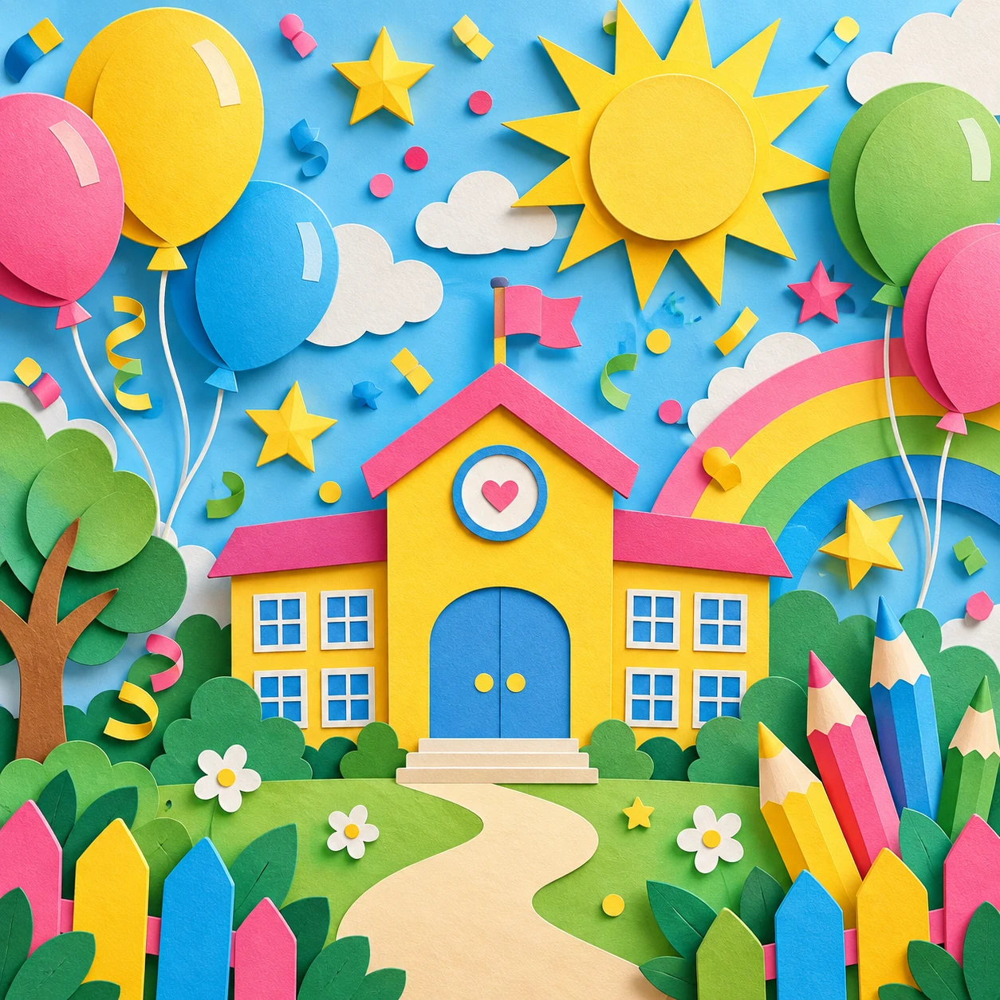

זזים ביחד
משחקי צוות ואתגרים משותפים בחצר.
MAKE ROOM FOR FUN
יום אחד. המון רגעים טובים.
משחקים, יצירה, תנועה וחברים — עיצוב ליום שיא בית ספרי שמוציא את כולם מהשגרה.
מה מחכה לנו? ↓
משחקי צוות ואתגרים משותפים בחצר.
צבעים, רעיונות וסדנת יצירה עם מקום לדמיון.
פעילות קבוצתית שמחברת בין הילדים.
DESIGN THE DAY
גררו מדבקות לשלושה חלקי היום. בלי עכבר? הקישו על מדבקה והיא תעבור למקום הבא.
יום כיף טוב משאיר מקום לסוגים שונים של השתתפות: לרוץ, ליצור, לחשוב או להצטרף בקצב שלך.
פוסטר מעוצב שממשיך את השפה של האתר גם בקמפיין ובסושיאל.
פתיחת הפוסטר בגודל מלא ↗PLAYDAY · יום שיא בית ספרי
SAVE THE DATE
| ראשון | סגור |
|---|---|
| שני | סגור |
| שלישי | סגור |
| רביעי | סגור |
| חמישי | 08:30–16:00 |
| שישי | סגור |
| שבת | סגור |